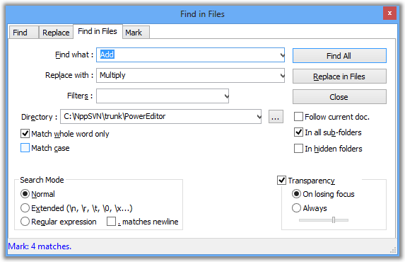

Texto original
Sugiere una traducción mejor
| Anterior: Reemplazar | Buscar | Siguiente: Ventana de resultados de búsqueda |

El cuadro de diálogo Buscar archivos realiza una búsqueda en el filtro dado para todos los archivos que cumplen con este criterio.
El entre los filtros del filtro en el nombre y la extensión; una lista desplegable es una reminiscencia de los filtros anteriores. Las extensiones están separadas por espacios si se proporcionan músicos.
El campo Directorio le permitirá especificar el directorio raíz de la búsqueda que, de forma predeterminada, es el directorio del archivo activo (para obtener más información, consulte Preferencias ).
Independientemente de la búsqueda y del filtro de directorio que se ajuste al documento, puede forzar la búsqueda en el archivo actual seleccionando Follow doc. bienes
Cuando subcarpetas se motiva, todos los subdirectorios se buscan en los resultados de búsqueda. Cuando se marcan las carpetas en caché , todos los subdirectorios ocultos también se inspeccionarán (de forma predeterminada, se ignorarán). iniciará la búsqueda, realizará el reemplazo.
Los resultados se muestran en la ventana de resultados de búsqueda .